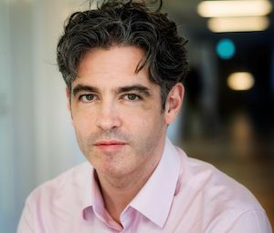
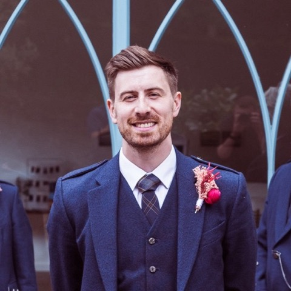

We worked with Jonathan and Daniel from an early stage of our journey for two main purposes. Firstly, to help decide on areas of chemistry to focus on and, secondly, to help structure our AI-driven laboratory around varying levels of automation from first principles.
The engagement began with two in-depth reports to detail a global view of a complete chemistry lab set-up. They delivered beyond our expectations, including everything from the most minute details of purchasing and safe storage to an exhaustive view of the stages and equipment required to achieve closed-loop chemistry workflows. We especially appreciated receiving workflow options for manual, semi-automated, and fully automated versions of what we could achieve, including capital and operating expense estimations.
Jonathan and Daniel then worked closely with our Director of Lab & Material Innovation to support the design of a new laboratory in a new building, contributing to decisions around layout, equipment selection, and workflow constraints suitable for an AI-first approach to experimentation. We truly valued their hands-on approach and ability to identify potential pitfalls in advance, including safety perspectives. They would always try to help us understand how to balance our level of automation/complexity vs. the costs and real benefits, and helped us recognise the importance of rate-limiting steps in high-throughput design.
We are now handing over to an engineering and design firm, who will translate this foundation into a detailed technical plan ahead of construction in the coming months. Throughout the engagement, Jonathan and Daniel acted as thoughtful and reliable partners, effectively bridging AI strategy, automation, and practical laboratory operations from the outset. We look forward to continuing our work with them as we move further into the laboratory automation strategy.

Jonathan joined my lab immediately following his PhD as one of our pioneering AI and Robotics specialists. Within three months, he was entrusted with the leadership of our Chemorobotics team. His first action was to establish a robust software and hardware architecture that empowered our team to develop ChemAI platforms with speed by leveraging modular, reusable building blocks. This accelerated our iteration cycles and, a decade later, several of his original libraries remain in use in daily lab operations.
Under my direct supervision, Jonathan managed a multidisciplinary team of ten engineers, PhDs, and postdocs at the then uncharted intersection of AI, Robotics, and Chemistry. His expertise in machine learning challenged the team to rethink data acquisition and successfully integrate novel concepts like active learning into our workflow. This resulted in high-impact publications in PNAS, Angewandte Chemie, and Nature Communications, which have since gathered hundreds of citations.
What stood out most was Jonathan's ability to understand the complexities of a chemistry environment despite his non-chemistry background. He quickly internalised the mental models and instrumentation logic required to operate at the cutting edge of the field. His ability to bridge the gap between complex robotics and chemical discovery provided a pivotal technical proof-of-concept during the formative stages of what would eventually become Chemify.
Jonathan possesses the technical depth to build the tools and the strategic vision to lead the people using them. Any organisation looking to transform their technical capabilities and accelerate innovation would be fortunate to partner with him.

I had the pleasure of working closely with Daniel during the formative years of Chemify, where he initially joined us as a seconded researcher from the University of Glasgow. Even within his first three months, it became clear that he possessed a rare combination of scientific insight, engineering creativity, and practical execution that set him apart from his peers.
Coming from a PhD background spanning chemistry and robotics, Danny brought an exceptional breadth of knowledge in synthetic chemistry alongside a deep understanding of automation and system design. During his initial placement, he designed, prototyped, and built two successive versions of a compact, high-throughput robotic platform for organic chemistry. His ability to rapidly transform concepts into functioning hardware was remarkable and played a significant role in accelerating our technology development.
Recognising both his technical capability and leadership potential, Chemify appointed him Head of Engineering shortly thereafter. In this role, I worked alongside him to build both the engineering team and the workshop facilities that would support Chemify's ambitious goals. He was instrumental in creating a highly effective engineering culture, bringing together multidisciplinary teams and orchestrating their efforts to deliver sophisticated automated chemistry systems under demanding timelines.
What distinguished Danny was not only his engineering talent but also his ability to bridge the gap between chemistry and hardware development. His extensive synthetic chemistry knowledge enabled him to understand scientific requirements at a fundamental level, while his engineering instincts allowed him to devise innovative, practical solutions quickly and efficiently. He consistently demonstrated an exceptional ability to prototype novel systems, solve complex technical challenges, and guide projects from initial concept through to successful implementation.
Beyond his professional achievements, he was a trusted colleague and collaborator whose enthusiasm, integrity, and commitment helped shape both the company and the people around him. I greatly valued our partnership and am pleased to count him among both my closest professional associates and friends.
I would recommend Danny without hesitation for any role requiring technical leadership, innovative engineering, and the ability to deliver complex multidisciplinary projects at pace.